COMPACT TRACTORS
In 1996 my wife and I purchased a house on 15 acres in suburban Pittsburgh, Pennsylvania. The land, which had been neglected for many years, consisted of about two acres of lawn, another two acres of badly overgrown pasture, and the remainder was wild woods. We knew we needed a tractor to help us take care of it all, but what kind, how big, what features and how much were all questions we hadn't a clue how to answer. Since then we've learned a lot about tractors from friends, neighbors, tractor dealers and, of course, the Internet. We also learned we weren't alone: Lots of other people moving from a city environment to a rural one had many of the same questions about tractors. This article is condensed from the information we've learned about tractors over the past several years. I decided to gather the common questions and answers we'd discovered into a Web site called "The Small Tractor FAQ (Frequently Asked Questions)." You are welcome to visit the Web site ( www.andrew.cmu.edu/user/kb13/TF_home.htm ), which contains links to tractor manufacturers, implement suppliers, tractor discussion groups and lots of other information and resources for and about small tractors.
What size tractor do I need for my number of acres?
That depends on what you want to do with the tractor and what your land is like. If you just want to mow grass on a fairly small, flat, level yard, a riding mower will probably be all you will need. On the other hand, if you want to plow a field, bale hay, pull stumps or exchange implements with neighbors, you'll need a more powerful machine.
Take a look at the "Tractor Selection Chart" in the Image Gallery to the right. Under "Characteristics," note the differences among the four tractor categories and decide which category best fits your work environment. Under "Uses," determine which tasks you will want to do with your tractor and note which tractor categories are capable of performing those tasks.
Which brands of tractor are good and which are bad?
Good and bad are relative terms. There are generally two types of lawn and garden tractor: light-duty and heavy-duty (see "Lawn and Garden Tractor Brands," in the Image Gallery).
Light-duty equipment is usually much less expensive to purchase, has low required maintenance, is made of sheet metal and plastic, is belt driven, has short-term parts availability and is designed to last for a short period of time.
Many failures on light-duty tractors simply can't be repaired, and used machines often can't be traded in for credit on new equipment. However, light-duty equipment is very popular, largely due to low purchase price. With proper care light-duty equipment can perform useful chores for many years.
But beware: Some manufacturers place overpowered motors into light-duty tractors in order to make them more attractive to buyers. This causes stress and strain beyond the tractor's design limits, resulting in rapid failure of the drivetrain, suspension, steering or other mechanisms.
On the other hand, heavy-duty equipment is typically expensive to purchase, has more required maintenance, is usually based on a steel frame (although certainly will contain sheet metal and plastic parts), often has true axles with castiron housings, is shaft driven, has long-term parts availability and is designed to last for many years with proper care. Most breakdowns on heavy-duty tractors can be repaired, although parts can be very expensive. It is common for users of heavy-duty equipment to "trade up" to a newer model after several years, as with automobiles. This means there is a good supply of used heavy-duty tractors to choose from.
The chart in the Image Gallery, "Lawn and Garden Tractor Brands," shows several popular brands of light- and heavy-duty lawn and garden tractors.
Estate tractors, also known as compact diesel tractors, are nearly all heavy-duty machines. These tractors lack many of the safety features of consumer tractors and should only be considered by experienced users with several acres or more of land. What differentiates brands in this category are reliability and parts availability.
Some brands have reputations for breaking down more than others. Parts for some manufacturers' tractors are more difficult to obtain. Some brands simply have inferior "fit and finish" in comparison to other brands, and some makes have consistently lower resale values than their competitors. For the purposes of this topic, I group estate tractors into two groups, service challenged and service neutral. The purchase of one of these tractors is a major investment, and replacement parts are expensive. It is a great benefit to establish a relationship with a nearby dealer who is knowledgeable, free with advice and stocks parts for your tractor.
Another table in the Image Gallery, "Estate Tractor Serviceability," shows the service category for popular brands of compact (and some not so-compact) tractors currently being manufactured.
What are the problems with a tractor that is too small or too big?
If you have a large yard to mow, a too-small tractor may take all day to do the job. If your land is too hilly, an underpowered tractor may not be able to climb the slopes. If your land is uneven, a too-small tractor may not have enough ground clearance to negotiate the bumps. If you expect to do heavy chores, an undersized tractor may bend or break with the strain.
You should consider carefully what tasks you want to do with your tractor now, as well as what you may want to do with it in the future. Many people are surprised at just how useful a tractor can be. Thinking only of lawn mowing, they get a machine that is adequate to do the job. Then when it comes time to till the garden, clear snow or cart heavy loads, they wish their little tractor were a little more powerful, a little heavier or built a little stronger. It is generally better to slightly oversize your tractor purchase. But read on:
As tractors increase in size-both height and width-they also usually increase in weight, horsepower, complexity and price. The bigger the tractor, the more difficult it is to operate safely. More powerful tractors can cause more damage when the operator makes an error. Larger tractors have higher centers of gravity and are easier to tip over. A larger tractor needs more storage space, wider paths, stronger bridges and higher clearance from overhead obstacles like roofs and branches. A larger tractor may need a trailer for transport, instead of riding comfortably in the back of a pickup truck. Bigger tractors may require bigger tools, and some tasks, like changing a tire that weighs more than 150 pounds, may require a helper. Larger tractors are less agile and need more room to turn. And finally, big tractors are more work just to get on and off.
What features will I need?
You may want to consider some optional features for your tractor, such as three-point hitch, power takeoff (PTO), power steering, hydrostatic transmission, four-wheel drive, four-wheel steering or even a limited slip differential. Note that most of these options consume engine horsepower and may influence tractor size requirements.
What attachments will I need?
What implements you'll need depends on what you'll be doing with your tractor. When shopping for a used tractor, it's a good idea to try to find one with as many model-specific attachments as possible. These include belly mowers, loaders and backhoes, which are custom-fit to that particular make and model. They are expensive to add later and not interchangeable among different tractors, as with three-point hitch implements. Here is a list of some common attachments and how they might be useful to you:
Mowers. There are many different kinds of mower to choose from. Rotary mowers are the most popular and variations include mid- or belly-mounted units, PTO-powered mowers for pulling behind larger tractors and self-powered units for towing behind smaller tractors or ATVs. Reel-type mowers, which often tow multiple reels, are the type most often used by golf courses for finishing fairways and greens. Field mowers are used to roughcut fields, brush or tall grass, especially over uneven ground. Variations include rotary cutters, both PTO- and self-powered, boom, sickle bar, flail and disk mowers.
Other Implements. Dozens of general and special purpose tools, both PTO-powered and motorized, can be used with tractors. You may want a tiller or plow for breaking ground, front loader for light digging or moving material, a box scraper or rear blade for grading land or any of a seemingly endless variety of available tools, including a post-hole digger, aerator, York rake, landscaping roller, carryall, rear scoop, bale spear and so on.
What is a grey market tractor?
If you shop around for anything larger than a garden tractor, sooner or later you will hear the term grey market tractor. A grey market tractor is simply a used tractor, usually a compact diesel, imported from another country, usually Japan. Demand for compact diesel tractors is quite high, and grey market tractors are becoming a popular option for an increasing number of buyers. However, there are advantages and disadvantages to purchasing a grey market tractor. The main attraction is these tractors are usually less expensive than nearly identical models made for the American market. For a variety of reasons-currency exchange rates, differences in the value of used equipment overseas, low import tariffs-used equipment dealers can profitably resell these tractors for less than domestic machines. By the same token, grey market tractors are worth less when they're traded in.
The main disadvantage to grey market tractors is manufacturers despise their resale in the United States and are actively trying to stop the practice. Yanmar's position on grey market tractors is spelled out quite clearly on its Web site. Kubota's site provides a list of grey models specifically made for use in Japan that the company's domestic dealers will not support.
Manufacturers claim these tractors are different from those manufactured to U.S. standards, particularly with respect to safety features. Also, although grey market tractors bear familiar trademarks, the manufacturers have not set up the dealer training and parts-service networks in the United States to support these particular models. So no support for this equipment is available from the manufacturers or from their licensed dealers.
Foreign models may not have part numbers that correspond to domestic models, which can make it difficult or impossible to obtain replacement parts. Manufacturers say safety drawbacks-such as foreign language warning labels, instrumentation and operator manuals, lack of roll bar protection, seat belts and PTO shields-make these tractors noncompliant with U.S. safety standards at best, and at worst, unsafe. In some cases dishonest or uninformed resellers misrepresent reworked grey market tractors as domestic models.
Manufacturers are fighting the inevitable customer confusion resulting from their inability to support some models of their own brands. On the other hand, independent dealers claim grey market tractors are mechanically identical to the higher-priced U.S. models, and a few safety labels, some inexpensive PTO shields, and add-on roll bar and seat belt can easily make them equally safe, as well. They claim to have cross references for nearly all parts and that manufacturers are unfairly restricting the market by refusing to support these tractor models.
Unscrupulous dealers? Greedy manufacturers? A little of both? The bottom line, as always, is the buyer should beware. If you choose to purchase a grey market tractor, consider the issues carefully and make sure you have an independent dealer who can support you for the foreseeable future. If you're shopping for a used tractor, be very sure of what you're buying.
A huge safety risk with grey market tractors is their lack of rollover protection. If your tractor is not equipped with a roll bar, adding one is probably the best investment you can make. Start by contacting the manufacturer to find an authorized dealer in your area who can equip your tractor with a roll bar and a seat belt. If the dealer won't help you, contact one of the following:
•Angus-Palm Industries, (605) 886-5681 • Custom Products of Litchfield, (800) 222-5463 • Full-Vision, (316) 283-3344 • Saf-T-Cab, (209) 268-5541.
What are some alternatives to buying a tractor?
Not everyone wants or needs a tractor. A tractor is not the ideal tool for every job. Purchasing a tractor can be a big expense and may not be necessary. Here are some alternatives:
FINANCING ALTERNATIVES
While you can take out a traditional loan at a dealer for a new or used tractor, not everyone is in a position to take on this kind of debt. If you are in the process of buying a new home or refinancing your existing one, you can add the tractor to your mortgage. This often makes sense for larger, heavy-duty equipment and adds very little to monthly payments. Not all mortgage companies may be willing to do this, but if this strategy appeals to you, shop around for a company that will.
If you have a short- or medium-term need for a dedicated tractor, you may want to buy, and then resell a used machine when you're finished. After several years, heavy-duty tractors in good condition do not depreciate much in value. In fact, some classic, 40- to 50-year-old tractors, like the Ford N series, now sell for more than they cost when they were new. (See "A Perfect Homestead Tractor," Mother Earth News, No. 191, Page 101.) As with any used machine, make sure it is in good condition when you buy it, and take care of it while you own it. (Be prepared to make some repairs.) How much you can resell it for will depend on finding a buyer who appreciates its value.
NONPURCHASE OPTIONS
Instead of buying, consider renting machinery or implements you need only occasionally. Most equipment dealers rent anything from single-bottom plows to tractor loader-backhoes. Rental fees are usually reasonable, especially compared to the purchase price. Most dealers offer delivery and pickup of large equipment and, except for very large equipment, do not require an operator's license.
If you are uncomfortable operating a piece of heavy equipment, consider hiring a commercial jobber. No matter what the task, there are probably dozens of independent contractors with the right equipment within a few miles of you. Check references, as usual, and insurance coverage (yours and theirs), depending on the work being done. These people get paid by the hour, so whatever site preparation or other preliminary work you can do to minimize their time on the job will be to your financial benefit. On the other hand, these contractors often won't accept small jobs that will take them less than half a day. In this case, see if you can share the cost with one or more of your neighbors who have small jobs that, combined with yours, will keep the contractor busy in the same area for the minimum time period.
Borrowing tools or equipment from friends, relatives or neighbors is still acceptable behavior in some parts of the country. You should, of course, be willing to reciprocate, should the need for one of your tools ever arise. You should try to return the item in better condition than when you borrowed it. Have it repaired or replace it if it breaks while you are using it, even if it wasn't your fault it broke. Return it shortly after you borrowed it and remember to say, "Thank you."
Try bartering a service you can perform in exchange for someone else's service to you. Find someone with the equipment you need who is able to do the job for you and see if you can perform an equal-value service of some kind for him or her.
ALTERNATIVE EQUIPMENT
The skid loader, or skid steer vehicle, has replaced the tractor for many commercial, agricultural and landscaping applications. Because of its narrow width, tight turning radius and quick agility, a skid loader is ideal for working in tight areas. But for lawn mowing and general field work (plowing, baling, raking, planting), a tractor is more useful. An excellent machine for everything from cleaning out barns to excavating, the skid loader can be equipped with a variety of implements, including backhoe, brush cutter, post-hole digger, manure forks, tiller, trencher, hay spear and even tanklike tracks. Case, Gehl, John Deere, New Holland, JCB, Thomas and Bobcat are popular brands.
A fairly new machine that is gaining popularity among small landscaping contractors is the miniloader. This fourwheel tractor has onboard hydraulics and is driven from a stand-up operator's compartment at the rear. It offers a growing variety of front-mounted implements for light digging, trenching and material handling (but not excavating). The Toro Dingo, Kanga Loader, Gehl Advantage and Ramrod Taskmaster are a few of the models currently available, but watch for other manufacturers to release products in this category soon.
If you only have a lot of grass to cut and not much else, a commercial mower may be an option. The variety of dedicated mowing vehicles seems to have exploded during the past decade. Available with huge mowing decks, commercial mowers can turn on a dime, and many can be equipped with enclosed cabs and snowplows or snowblowers for winter use. These machines are not very flexible in the variety of attachments they support, but they are extremely good at mowing grass quickly. Toro, Grasshopper, Dixon and Yazoo are popular brands. And in the most unusual mower category, the DewEze 72 AllTerrain Mower may be the closest thing to a mowing motorcycle you've ever seen (see photo, Image Gallery).
For those who primarily need to till soil for gardens, a two-wheel tractor may be an option. These self-propelled, walk-behind machines are usually equipped with a rear-tine rotary tiller, but can alternatively be fitted with a front rotary broom, mowing deck, light-duty chipper-shredder, pressure washer, snowplow or snowblower. BCS, Gravely and Troy-Bilt are popular brands. If you already own or are thinking of purchasing an all-terrain vehicle (ATV) you may be surprised to learn how many attachments are available for it. Snowplows and self-powered mowers, brush cutters, seeders, plows and tillers are all available for pushing or towing with an ATV. Check with an ATV dealer for available implements. Polaris, Honda, Kawasaki, Suzuki and Arctic Cat are popular brands.
As with any other purchase, it pays to shop around before buying a small tractor. Look at new and used equipment, talk with dealers and other owners, think carefully about your current and future needs and get the best fit for your situation. A little research up front will pay off in fewer problems down the road.
|
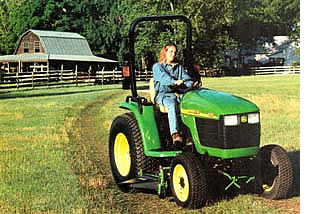 PHOTO COURTESY JOHN DEERE John Deere's 4410 compact utility tractor. |
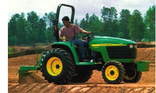 PHOTO COURTESY JOHN DEERE GCO-Allis ST30 compact tractor. |
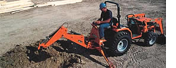 PHOTO COURTESY AGCO-ALLIS The unique DewEze All-Terrain Mower is especially good for mowing slopes. |
|
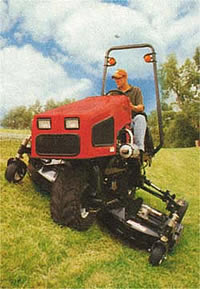 PHOTO COURTESY DEWEZE New Holland TC30 tractor. |
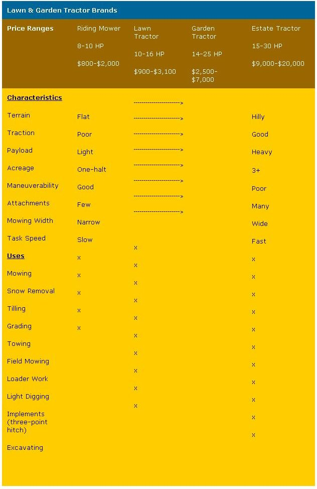 PHOTO COURTESY NEW HOLLAND Toro 300 series mower-tractor with tiller. |
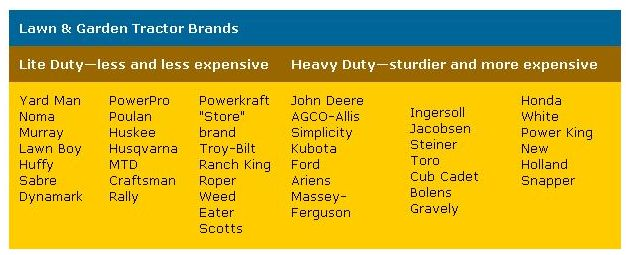 PHOTO COURTESY TORO This Suzuki ATV is being used to pull a stump. |
|
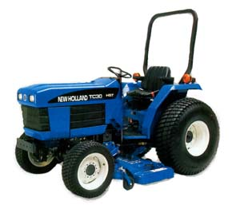 PHOTO COURTESY SUZUKI The author, Ken Burner, on his Kubota tractor. |
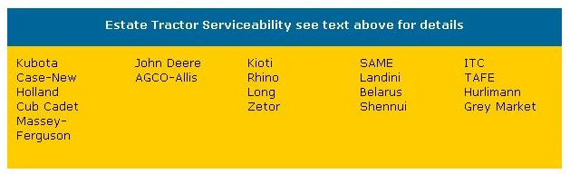 PHOTO COURTESY KEN BURNER The Bobcat 773 skid loader works well in tight areas. |
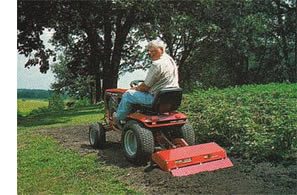 PHOTO COURTESY BOBCAT |
|
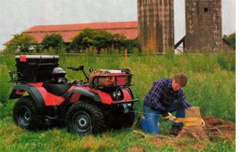 |
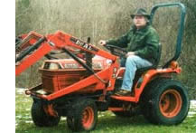 |
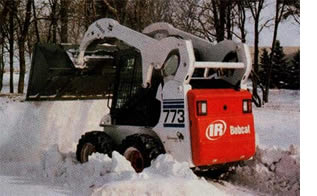 |